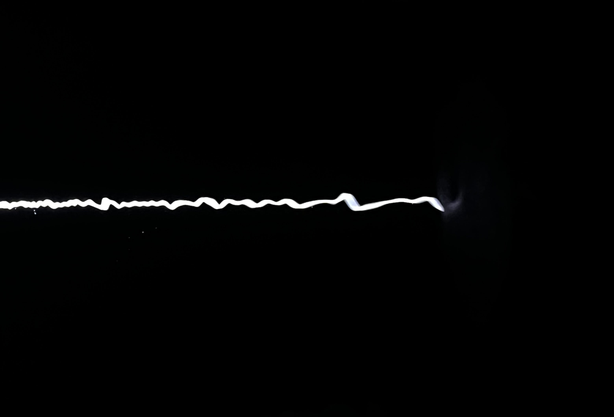

Start again the lament

Last week, we celebrated the #blackholeweek in Copenhagen. The idea was quite straightforward: we were organizing back to back conferences
on various aspects of black hole physics. The second one had more than two hundred registered participants, and it was taking place in a big venue.
So why not take the chance and try to have a more direct impact in the city? When attempting outreach activities, my feeling is that often we
end up preaching to the choir. Which we did, by having talks in the Planetarium, and in a bar. But we also tried to reach beyond, and bring black holes
to the street, through an installation in the city center.
As it often happens, I had enough black holes with the conference, and mid-way through the week I needed a break.
Together with Mark, we took our bicycles and cycled towards Frederiksberg, perhaps going through the single uphill road in the whole city.
We had a lovely lunch in a vegan cafe (the place was more beautiful and cozy than the food was tasty, though), and found ourselves in Cisternerne.
I know a couple things about the venue, and some friends of Mark had recommended it to him, but beyond that, I had no idea what to expect.
Cisternerne is an underground water reservoir, now turned into a venue for art installations.
Shallow water, darkness (or absence of natural light, I'll come back to this), and columns make up for the whole landscape, hidden under Frederiksberg park.
I must say, this was one of the sunniest, warmest days of the summer. The sky was bright and the sun was shining with roaring intensity. It was almost warm enough to embrace the shade.
In this landscape, the entrance to the museum opened up like a descent to hell, a long stairway to the underworld.
The installation, by Taryn Simon, titled Start again the lament had been custom made for this space. It was a sound installation,
mixing the sounds of professional mourners, echoing through the columns. Voice and instruments bounced off the water to make for a varying
landscape of grief. In the first couple minutes, the contrast between the exterior (sunny, warm), and the interior (dark, cold), meant that I could barely see enough to not fall into the water.
It felt eerie, it felt uncomfortable, it genuinely felt like every step was crossing the river Styx to never come back.
At the end of the loop, a single white led light illuminated part of the space. Finding light again, even if in this case, an artificial one,
had a strange effect. To me, it provided calm, and took away the eeriness, and most of the discomfort. It felt like a hand in your shoulder,
handing you a cup of warm coffee. It felt like a reminder of what the grief and the mourning does for you - to help you navigate the darkness, and find something again.
After walking through the loop a couple more times, my eyes adjusted more and more to the darkness. At some point it did not feel dark anymore,
it was not uncomfortable. The sounds became music, and I started to learn the rythm and the melody of the installation. If that is how death feels like,
I thought, then it is not that bad. The rest of the visitors felt like other ghosts passing by, the ones that had just arrived had a frightened look in their eyes,
and I wanted to calm them and tell them that everything was going to be alright. The ones that had been there for a while had a serene look, and at some point
it felt like meeting and old neighbour.
This is why I felt the need to write down the thoughts that this installation provoked in me. It was an intense experience, and at the time, a necessary one.
I think I learned some lessons from it, although I don't know if they are any useful. The first one, that installations made to fit a space, and in particular, a weird space,
can be very powerful. Installations that try to hit a single note, a single feeling, can be even more powerful.
The second one, that even if everyone is talking about black holes, even if black holes are literally taking over the center of the city where I live,
there is still more to life than that. And the third one, that some mourning traditions in some places (which I could not track) seem extremely interesting, musically and emotionally beautiful.
If you are in Copenhagen, I can only recommend you to visit the installation.